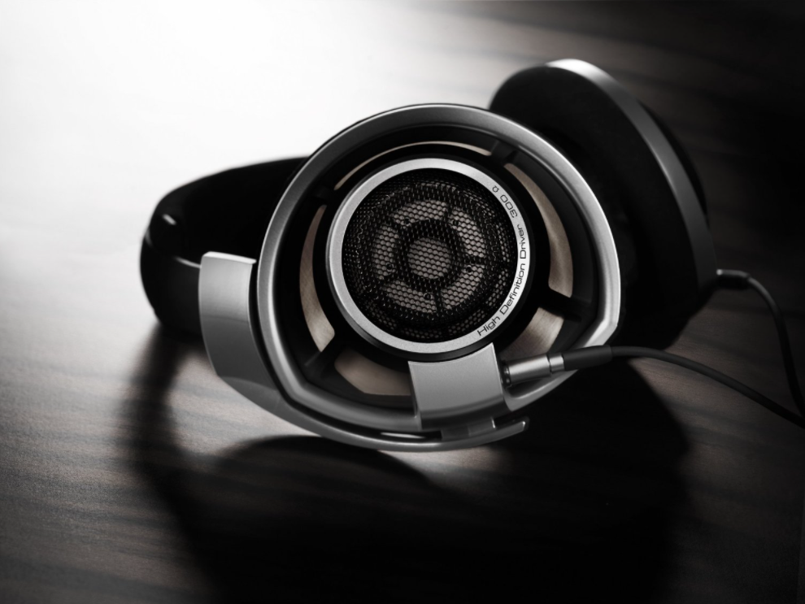
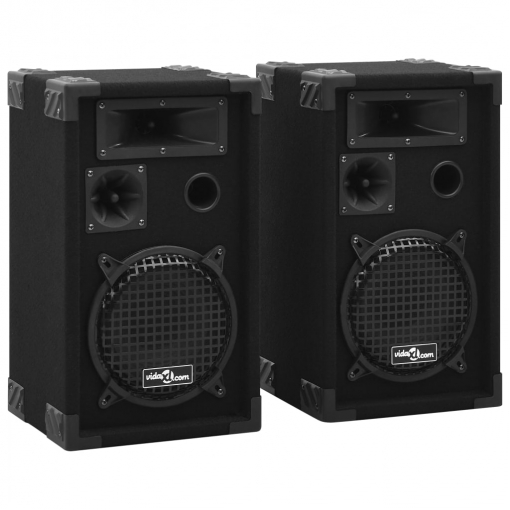
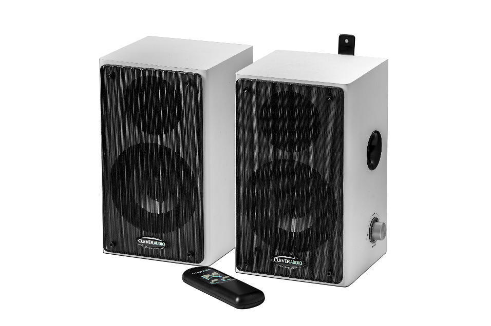

Conócenos
Los auriculares y los altavoces son la base que se necesita para poder reproducir el sonido de la forma en la que lo conocemos hoy en día. Sin ellos sería imposible poder reproducir la música que tanto nos gusta, escuchar un concierto de forma adecuada o sonorizar debidamente cualquier tipo de recinto.
Aquí te mostraremos la base de lo que debes saber sobre los principales sistemas de reproducción de sonido que utilizamos en nuestro día a día, para que sepas cuál opción se ajusta más a tus necesidades
La almohadilla rodea totalmente el oído y se apoya sobre la cabeza, haciendo que sean cómodos. Son los más grandes y difíciles de transportar, pero gracias a sus dimensiones, son considerados los que tienen mejor calidad de sonido ya que los drivers que contiene son de mayor tamaño, aportando una mayor extensión y dinámica. Presentan una escena más amplia y con mejor separación instrumental.
Estos se apoyan directamente sobre la oreja y suelen estar diseñados para su uso portátil, sacrificando la comodidad y la calidad del sonido. Tienen un fácil aislamiento, pero con las cápsulas de menor tamaño, los drivers lo son también y baja la calidad del sonido considerablemente. No están diseñados para largos tiempos de uso ya que, al estar apoyados en la oreja, aprietan y pueden ser molestos. Por norma general, la escena que tienen es más reducida y la calidad de la separación de instrumentos se reduce bastante con respecto a los over ear.
Este tipo de auriculares son utilizados mayoritariamente de manera portátil y se colocan introduciéndolos directamente en el interior de la oreja. Gran parte de ellos son de gama media o baja ya que si se quieren poner varios drivers el aumento de peso van a hacer que se caigan con facilidad. Suelen tener buen aislamiento del sonido y su comodidad varía dependiendo de la persona y de si tienen almohadilla o no.
A diferencia de los auriculares, los altavoces son sistemas de reproducción de sonido diseñados para abarcar espacios más amplios para que puedan ser escuchados de forma cómoda por más de una persona. Como veremos más adelante, existen muchos tipos de altavoces con características diferentes, pero la realidad es que todos parten de una configuración básica que se divide en tres partes:
- Tweeter: altavoces que reproducen tonos altos o agudos.
- Driver: altavoces que reproducen tonos medios.
- Woofer: altavoces que reproducen tonos bajos o graves.
En estos auriculares las copas están abiertas y protegidas por una rejilla externa que deja entrar el sonido exterior y salir al sonido interior. Los auriculares topes de gama son de este tipo, pero no todos los abiertos son mejores que los cerrados. Estos cascos son más ligeros, cómodos y frescos, su escena es más amplia y tiene una imagen más real del escenario. El mayor punto negativo es que no aíslan el sonido.
Las copas son cerradas, por lo que aísla el sonido tanto de dentro a fuera como de a fuera a dentro, al contrario de los abiertos. En gama media y baja suelen superar en calidad a los anteriores, pero al aumentar el presupuesto es más difícil igualar la calidad de los abiertos. Algunos auriculares, para mejorar el aislamiento, aumentan la presión en la cabeza y los hacen más incómodos. Tienen menos escena que los abiertos y suenan más apelotonados.
Los drivers también conocidos como transductores electroacústicos, son las partes que vibran y generan el sonido que escuchas.
Si hablamos de auriculares, la mayoría solo tienen un driver y es cuando subimos de gama cuando empiezan a incorporar alguno más.
Auriculares in ear según el tipo de driver:
- Auriculares in ear single driver: Son los que cuentan con un solo driver que cubre todo el rango de frecuencias. Lo más habitual es que se trate de un driver dinámico, pero también puede ser un driver balanced armature. Por lo general se trata de modelos de gama media y baja. Su principal ventaja es que al no necesitar filtros ni espacio para varios drivers pueden ser más pequeños y cómodos. Un single driver dinámico por lo general cumple mejor a través del rango de frecuencias que un single balanced armature, que, aunque fácilmente puede ser mejor que el dinámico en medios y agudos, suele pinchar en graves y subgraves.
- Auriculares in ear multi-driver: Cuando salieron este tipo de auriculares había bastantes modelos con 2 drivers, y aún queda alguno, pero la mayoría tienen a partir de 3 drivers, que es lo más adecuado para al menos cubrir las tres vías principales (graves-medios-agudos). Del mismo modo, los diseños full balanced armature fueron dejando sitio a los híbridos, que aprovechan el mayor realismo de los drivers dinámicos en graves y subgraves sin renunciar a la precisión de los balanced armatures en medios y agudos. El número de drivers es algo que se ha explotado mucho a nivel comercial, con los modelos de gama alta escalando progresivamente con los 8, 10, 12 y hasta 18 drivers por cápsula. En realidad, un mayor número de drivers no garantiza un mejor sonido y puede presentar numerosos problemas.
Están especialmente diseñados para hacer deporte, con mejor sujeción, comodidad y resistencia. Pueden ser Bluetooth (cada vez más) o con cable.
Son auriculares con micrófono. Buena comodidad, muchas veces incluyen controles mute, volumen y otras funciones útiles para gamers como la activación automática del micrófono o un sonido que te haga detectar hasta el más mínimo detalle en un juego.
Hoy en día casi todos los auriculares tienen micrófono y control para poder usarlos para hablar con un smartphone. El micrófono no empeora la calidad de sonido de los auriculares ni encarece demasiado el precio de los mismos.
Son auriculares de diadema pequeños y cerrados con un sistema de plegado que facilita guardarlos y meterlos en el equipaje.
Son auriculares cerrados, con un gran aislamiento, a veces con uno de los brazos móviles para liberar uno de los oídos y bastante resistentes para aguantar un trato exigente.
Los tipos de altavoces según su número de vías son:
Altavoces de dos vías: Son los modelos más comunes y utilizados, debido a que cuentan con un driver y un tweeter, lo que ofrece una gama de sonido relativamente amplia con un equipo de reducidas dimensiones (aunque el tamaño puede variar en función de la potencia que se necesite).
Altavoces de tres vías: Estos modelos están formados por el driver, el tweeter y el woofer, lo que ayuda a completar un espectro de sonidos más amplio gracias a la adición de los sonidos graves.
Son altavoces convencionales de alta fidelidad que se usan con un cable de altavoz y un amplificador. Funcionan con una señal amplificada, pero si tiene más de driver, su señal se divide en frecuencias altas y bajas en un circuito llamado crossover.
A diferencia de los anteriores, no necesitan tener un amplificador externo ya que está integrado en la caja. Estos altavoces son los más habituales en estudios de grabación profesionales. Lo que se necesita para hacer funcionar a estos tipos de altavoces es una forma de llevar la señal de salida a los altavoces (esto puede ser analógico, digital o incluso inalámbrico) y una conexión a la red eléctrica.
Es el tipo de altavoz más común. Usa un campo magnético para mover un diafragma en forma de cono. Cuando se aplica corriente alterna (la señal de audio) a la bobina, el diafragma vibra y hace que el aire se mueva, creando así el sonido.
Es un altavoz que reproduce frecuencias de audio de tono bajo. Con un rango aproximado de 20 a 200 Hz, el subwoofer es omnidireccional, lo que quiere decir que realmente no importa dónde lo coloques, ya que apunta en todas las direcciones. Los altavoces de escritorio o los sistemas de audio para automóviles vienen con algún tipo de subwoofer, aunque la realidad es que este tipo de altavoces destacan en el ámbito del sonido profesional (en cines, por ejemplo, son una pieza fundamental).
Consiste en un driver que convierte las señales de audio en ondas acústicas, y una bocina que enfoca y amplifica las ondas de sonido. Este altavoz es muy eficiente y es capaz de alcanzar niveles de presión de sonido muy altos, lo cual lo hace perfecto para hacer que el sonido llegue a todos los puntos de una gran superficie.
Los altavoces electrostáticos pueden ser una excelente opción para cualquiera que busque un sonido nítido y detallado. Estos altavoces cuentan con una membrana fina de plástico, recubierta con un material conductor como el grafito, que se coloca entre dos paneles conductores. Vienen con una fuente de alimentación externa y siempre están enchufados a una toma de corriente. En la mayoría de los casos, los altavoces electrostáticos se utilizan para frecuencias altas y no son la mejor opción en caso de buscar tipos de altavoces de baja frecuencia.